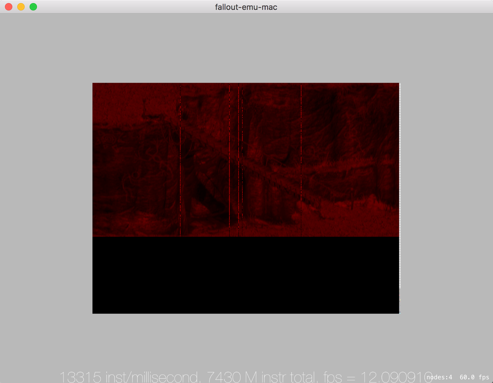
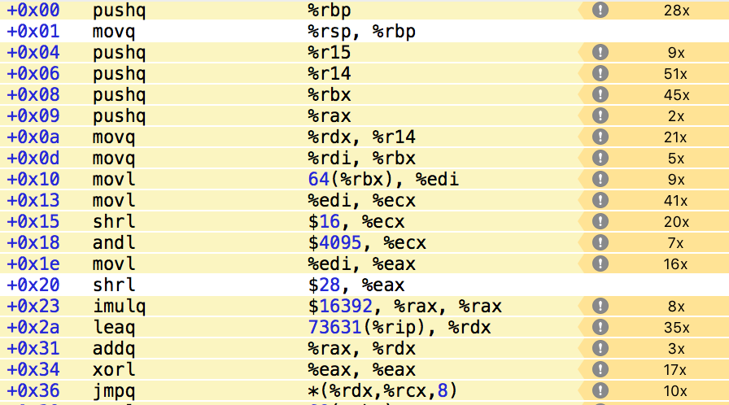
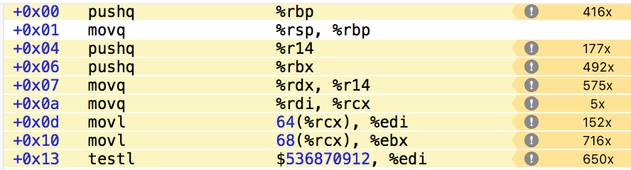
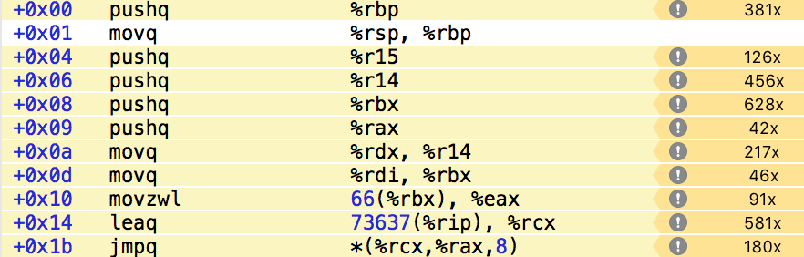

Fallout Emu это эмулятор x86 процессора с расширением в виде реализации части Win32 API, для того, чтобы сделать возможным запуск на нем игры Fallout 2. На данной странице будет освещаться обновление статуса проекта.
Alexander Smirnov, alexander@smirn0v.ru
Добился стабильных 10-12 FPS на вступительном ролике. Вот видео https://youtu.be/DXt2ODQZ114 Как и описывал – основная проблема была в том, что когда начинает проигрываться ролик Fallout вызывает функцию VirtualProtect и помечает часть секции исполняемого кода, как доступную на запись и на лету как-то модифицирует код, который участвует в отрисовке. Это отключало мое кеширование уже задисассемблированных инструкций. Сначала пробовал в лоб, без изменения к подходу раздачи прав на виртуальную память. Ловил моменты, когда идет запись в виртуальный блок памяти и помечал его как не кешируемый при дизассемблировании, но не перманентно, а на ближайших 100 инструкций. После 100 он опять начинает кешироваться. Если во время этих 100 инструкций будет произведена опять запись в эту область памяти, то кеширование отложится еще на 100 инструкций. Причем сбрасывал я весь кеш дизасма каждый раз. Это не очень хорошо работало, т.к. кеш сбрасывался часто и слишком много. Плюс где-то была еще проблема т.к. после N сбрасываний фетчилась не верная инструкция. Пока не выяснил почему, переключился на другой вариант.
Зашел с немного другой стороны. Вместо того, чтобы выставлять access rights на целый блок памяти, который был выделен или замаплен – сделал выставление прав возможным на каждый блок по 4KB. Теперь не обязательно выставлять write flag на всю секцию исполняемого кода, а только на ту, что запросили. Поправил дизассемблирование и кеширование в соответствии с этим и получил 10-12 FPS на проигрывании ролика уже сейчас. Но всеравно во время проигрывания ролика часто участвует тот кусок кода, который модифицировался и там не работает кеш и это дает тормоза. Следующим шагом нужно это будет добить.

Так выглядит последнее изображение, которое выдает эмулятор. Дальше похоже начинает сказываться то, как криво сделан ddraw, вероятно уже должно отрисовываться меню игры, но из-за особенностей ddraw его нет на экране. Этим будем заниматься сильно позже.
Остальные попытки оптимизаций из разряда замены подобного кода
FERegisterName beu_register32_from_argtype(Int32 argtype, Int32 argposition) {
assert(argposition == 0);
if(argtype & REG0) return kEAX;
if(argtype & REG1) return kECX;
if(argtype & REG2) return kEDX;
if(argtype & REG3) return kEBX;
if(argtype & REG4) return kESP;
if(argtype & REG5) return kEBP;
if(argtype & REG6) return kESI;
if(argtype & REG7) return kEDI;
assert(false);
exit(-1);
}
На обращение через массив ничего не дает. Но результаты есть.
Ранее все названия подключаемых dll явно везде lowercase'ил, без разбора. Обнаружил, что когда уже идет rendering loop, то часто используемые функции из dll, такие как GetTickCount тормозят, потому что при вызове делается lowercase. Немного пересмотрел код оставив lowercase только в самом начале, а при обращениях сам уже правильно указываю название.
Rep/repne это префиксы перед некоторыми инструкциями, которые говорят процессору – повторяй эту инструкцию, пока ecx не будет равен 0 или не будет выставлен или сброшен флаг ZF.
Ранее реализовал это проверяя префикс перед выполнением каждой инструкции процессора. Но rep/repne могут быть выставлены только ряду инструкций. Утащил обработку внутрь.
Сейчас эмулятор после того как дизассемблировал очередную инструкцию – запоминает результат и в следующий раз при выполнении этого же места использует предыдущий результат. В какой-то момент это дало просто отличные результаты и операцию дизассемблирования ушла вниз в профайлере.
Но такой трюк можно выполнять, только если выполняемая страница памяти помечена как READONLY|EXEC. Если же память разрешена на запись – такого делать нельзя, т.к. программа модифицирует сама себя, меняется на ходу.
Кто бы мог подумать, что Fallout 2 этим занимается ? Прямо перед тем как начинается rendering loop происходит вызов VirtualProtect и блок BEGTEXT разрешается на запись. Т.е. прямо перед rendering loop скорость знатно падает. Попробовал в качестве эксперимента отключить проверку. FPS с 2 возрос до 12, но на картинке появились странные артифакты. Конечно так делать нельзя.
На данный момент в эмуляторе access rights раздаются не на страницы памяти, а на виртуальные блоки. Поэтому весь BEGTEXT помечается на запись. Возможно запрашивается такой доступ не на весь и нужно несколько изменить архитектуру, чтобы не проигрывать по скорости.
Branch'инг зло. Нужно избегать условий, так будет работать быстрее. Но не всегда все так просто. Думал, что смогу улучшить следующий блок кода:
uint32_t beu_load_arg_value(ARGTYPE * arg, uint32_t immediat, FEProcessContext *process) {
FEBitWidth bitWidth = (FEBitWidth)arg->ArgSize;
if(arg->ArgType & REGISTER_TYPE) {
if(arg->ArgType & GENERAL_REG) {
FERegisterName regName = beu_register_from_argtype(arg->ArgType, arg->ArgPosition, bitWidth);
return fe_threadContext_register(process->currentThread, regName, bitWidth);
} else if (arg->ArgType & SEGMENT_REG) {
FERegisterName regName = beu_seg_register_from_argtype(arg->ArgType);
return fe_threadContext_register(process->currentThread, regName, bitWidth);
} else {
assert(false);
}
} else if(arg->ArgType & MEMORY_TYPE) {
return beu_load(arg, process, bitWidth);
} else if(arg->ArgType & CONSTANT_TYPE) {
return (uint32_t)beu_sign_extend(immediat, bitWidth);
}
assert(false);
return 0;
}
if/if/else if и т.п. Можно попробовать от этого избавиться сделав безусловные переходы на основе констант. Получилось, используя пару трюков.
uint32_t beu_load_arg_value(ARGTYPE * arg, uint32_t immediat, FEProcessContext *process) {
static const void* flow[9][2049] = {
{},
{},
{ // REGISTER_TYPE
[0 ... 1] = (void*)0,
&&GENERAL_REGISTER_FLOW, // GENERAL_REG
[3 ... 255] = (void*)0,
&&SEGMENT_REGISTER_FLOW, // SEGMENT_REG
[257 ... 2048] = (void*)0
},
{}, //3
{[0 ... 2048] = &&MEMORY_TYPE_FLOW}, // MEMORY_TYPE
{}, //5
{}, //6
{}, //7
{[0 ... 2048] = &&CONSTANT_TYPE_FLOW}, //CONSTANT_TYPE
};
goto *flow[(arg->ArgType >> 28)&0xf][(arg->ArgType>>16)&0xfff];
GENERAL_REGISTER_FLOW: {
FERegisterName regName = beu_register_from_argtype(arg->ArgType, arg->ArgPosition, (FEBitWidth)arg->ArgSize);
return fe_threadContext_register(process->currentThread, regName, (FEBitWidth)arg->ArgSize);
};
SEGMENT_REGISTER_FLOW: {
FERegisterName regName = beu_seg_register_from_argtype(arg->ArgType);
return fe_threadContext_register(process->currentThread, regName, (FEBitWidth)arg->ArgSize);
};
MEMORY_TYPE_FLOW: {
return beu_load(arg, process, (FEBitWidth)arg->ArgSize);
};
CONSTANT_TYPE_FLOW: {
return (uint32_t)beu_sign_extend(immediat, (FEBitWidth)arg->ArgSize);
};
assert(false);
return 0;
}
Новое для меня тут было использование адресов goto меток. http://blog.llvm.org/2010/01/address-of-label-and-indirect-branches.html https://gcc.gnu.org/onlinedocs/gcc/Labels-as-Values.html#Labels-as-Values
Это должно давать отличный прирост, ведь мы уходим от условных переходов совсем.
Второе, это designated array initializer для массивов. Строки вида [0 ... 2048] = some https://gcc.gnu.org/onlinedocs/gcc/Designated-Inits.html
Проблема лишь в том, что вместо нескольких условных переходов, часть из которых и не выполняется новый код содержит несколько побитовых сдвигов, побитовое "и" и еще умножение ([i][j] же превращается в i * sizeof(type) * 2049+j * sizeof(type)). 
Сдвиг на на 16 бит и побитовое "и" с 0xfff
shrl $16, %ecx
andl $4095
Сдвиг на 28 бит. Побитовое "и" ушло с оптимизацией, т.к. использовался 32 битный регистр %eax и после сдвига остается 4 бита, нет смысла делать "и".
shrl $28, %eax
Умножаем результат сдвига на 28 на 16392, что есть 2049 умноженное на размер указателя void*. 2049 * 8 = 16392. У меня 64 bit система, поэтому 8 байт на указатель.
imulq $16392, %rax, %rax
Массив flow находится по какому-то смещению относительно текущего места исполнения. Используя relative addressing добавляем к базовому результату уже лежащему в %rax
leaq 73631(%rip), %rdx
addq %rax, %rdx
Теперь долгожданный безусловный переход. Синтаксис * (base, index, scale) обозначает взять значение по адресу base + index*scale. Т.е. именно тут мы наконец домножили на 8, т.е. на размер указателя на void на 64bit системе.
jmpq *(%rdx,%rcx,8)
Все это проигрывает простому предыдущему варианту начала  Кажется, что на первый взгляд проблема в большом количестве арифметики. Это просто решается.
static const void* flow[65535] = {
[0 ... 8193] = &&FAIL_FLOW,
&&GENERAL_REGISTER_FLOW, // REGISTER_TYPE | GENERAL_REG
[8195 ... 8447] = &&FAIL_FLOW,
&&SEGMENT_REGISTER_FLOW,
[8449 ... 16383] = &&FAIL_FLOW,
&&MEMORY_TYPE_FLOW,
[16385 ... 32767] = &&FAIL_FLOW,
&&CONSTANT_TYPE_FLOW, // CONSTANT_TYPE
[32769 ... 33791] = &&FAIL_FLOW,
&&CONSTANT_TYPE_FLOW, // CONSTANT_TYPE | RELATIVE_
[33793 ... 34815] = &&FAIL_FLOW,
&&CONSTANT_TYPE_FLOW, // CONSTANT_TYPE | ABSOLUTE_
[34817 ... 65534] = &&FAIL_FLOW
};
goto *flow[*((uint16_t*)(&arg->ArgType)+1)];
Массив теперь одномерный, а для того, чтобы не нужно было делать никаких смещений можно обратиться сразу к нужному слову из ArgType. Это дает такой итог  Действительно индекс из ArgType достается одной командой
movzwl 66(%rbx), %eax
66 байт смещение от %rbx из-за структуры ARGTYPE
#pragma pack(1)
typedef struct {
char ArgMnemonic[64];
Int32 ArgType;
Int32 ArgSize;
Int32 ArgPosition;
UInt32 AccessMode;
MEMORYTYPE Memory;
UInt32 SegmentReg;
} ARGTYPE;
#pragma pack()
Т.е. пропускается 64 байта от ArgMnemonic и потом еще 2 байта от ArgType т.о. получая второе слово из ArgType. Тут интересный момент. Инструкция movzwl здесь работает только с %eax, но на самом деле на x86_64 mov, который работает с 32bit регистрами автоматически обнуляет верхнюю часть соответствующего 64bit регистра. Именно за счет этого jmpq ниже, использующий %rax работает корректно.
Что же в итоге ?..
Последний вариант при повторных замерах все-равно проигрывает оригинальному с if/else/else if где-то на 1K инструкций в миллисекунду. На самом деле результат еще мажется тем, что вот эта вот часть с бранчингом она и не была узким местом функции. Узкое место в дальнейших вызовах, возможно после их оптимизации можно будет вернуться к этому вопросу, а пока сложно сделать вывод "почему", когда слишком много еще всего в функции, что вероятно по другому оптимизируется компилятором в зависимости от начала функции.
Но было интересно, да.
Решил начать вести записи по проекту. Сейчас первый кадр выглядит так В красных тонах потому что мне сильно не до детальных разбирательств с DirectDraw которому уже лет 15 и пока лень разбираться с палитрой. С помощью SpriteKit довольно быстро получилось сделать простейшее приложение, которое закидывает в текстуру данные полученные от эмулятора и выводит кадры игры.
Можно посмотреть видео: первые кадры
Видно:
Сейчас основная проблема это скорость. 2 FPS это конечно не интересно. Последние изменения, которые делал для скорости следующие:
Баги с которыми столкнулся в последнее время: